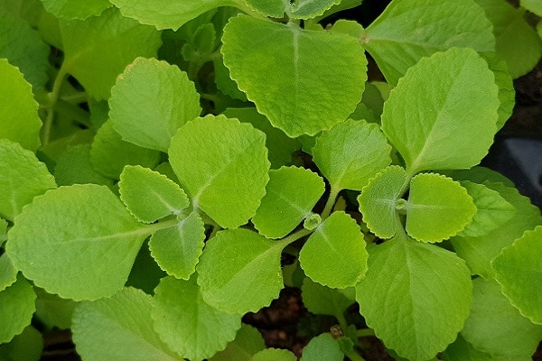

🍀 Malvarisco (Plectranthus amboinicus)
Visualização 3D
Carregando modelo 3D...
Iniciando...
Gire o modelo com o mouse e use a rodinha para zoom
Descrição Botânica
O Malvarisco (Plectranthus amboinicus) é uma planta herbácea perene, suculenta, aromática, com caules rasteiros ou prostrados. Suas folhas são grossas, carnosas, aveludadas, com bordas crenadas e um aroma forte e característico quando maceradas. Pode atingir entre 30-90 cm de altura e se espalha facilmente. As flores são pequenas, de cor lilás pálido, dispostas em inflorescências terminais.
Propriedades Medicinais
- Expectorante: Auxilia na eliminação do catarro e alívio de afecções respiratórias
- Anti-inflamatório: Ajuda a reduzir processos inflamatórios, especialmente do trato respiratório
- Antimicrobiano: Possui propriedades que combatem diversos microrganismos
- Analgésico: Auxilia no alívio de dores, especialmente de garganta
- Antitussígeno: Ajuda a aliviar a tosse
Modos de Uso
Chá
Preparo: Utilize 2 a 3 folhas frescas (ou 1 colher de sopa de folhas secas) para cada xícara de água. Coloque água para ferver e, após desligar o fogo, adicione as folhas. Tampe e deixe em infusão por 10 minutos. Coe antes de consumir.
Dosagem: Beber 3 a 4 xícaras ao dia, de preferência morno.
Xarope
Preparo: Em uma panela, adicione 3 xícaras de água, 1 xícara de folhas de malvarisco picadas e 1 xícara de açúcar mascavo. Leve ao fogo baixo por 20 minutos. Coe, deixe esfriar e guarde em recipiente de vidro na geladeira.
Dosagem: 1 colher de sopa, 3 vezes ao dia.
Contraindicações
- Gestantes e lactantes devem evitar o uso
- Pessoas com problemas hepáticos devem consultar um médico antes do uso
- Não recomendado para crianças menores de 2 anos
- Pode interagir com medicamentos anticoagulantes
- Em doses altas pode causar irritação gástrica
Curiosidades
- Também é conhecido como hortelã-graúda, hortelã-pimenta, hortelã-gorda ou hortelã-da-folha-grossa
- É originário da Ásia Tropical e foi introduzido no Brasil durante o período colonial
- Na culinária indiana, é utilizado em temperos e em alguns pratos tradicionais
- É uma planta resistente que se adapta bem a diversas condições e é de fácil cultivo
- Na medicina tradicional, é usado há séculos para tratar problemas respiratórios em diversas culturas
Monografia Científica
Baixar PDF Completo
Estudo detalhado pela UNICAMP - Departamento de Farmacognosia
Voltar para Catálogo